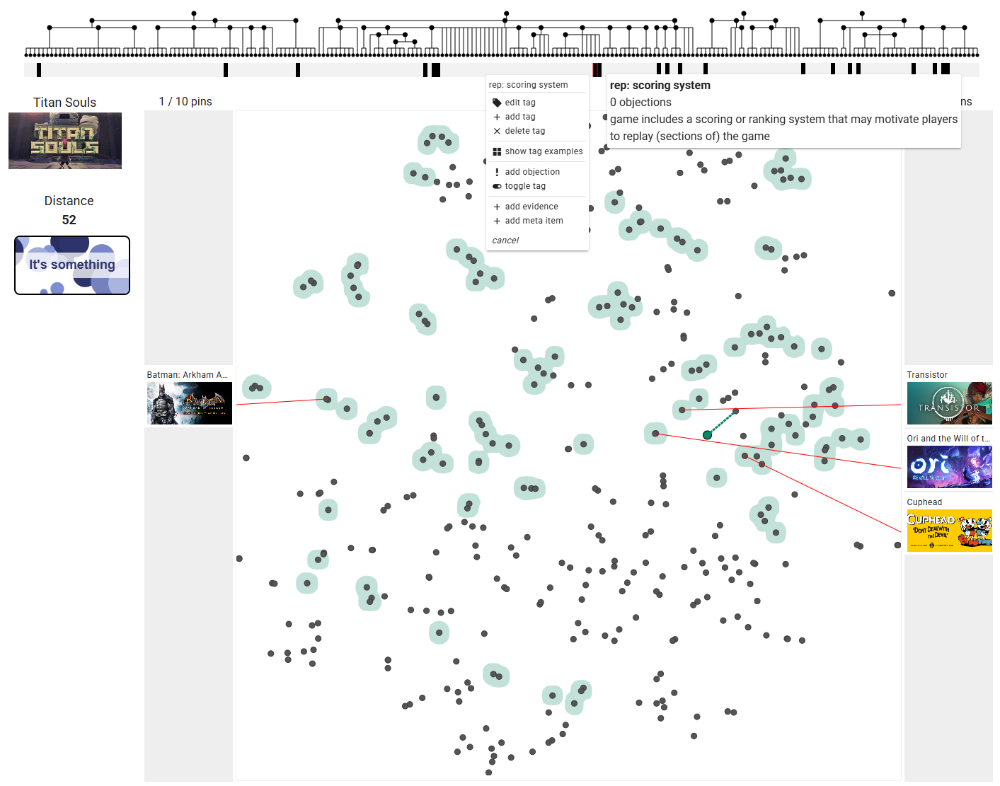

Playing with Knowledge: Leveraging Visualization Games for Data Validation and Inspiration

Venue. EuroVis (2025)
Abstract. We present an approach to use visualization games for data validation and inspiration in a collaborative coding context. As part of an interactive coding system that lets coders create a tag hierarchy and tag data items, we designed multiple games that support validating that data and exploring it in a novel way. Each game has mechanics inspired by existing games and incorporates visualization and externalization to varying degrees. By playing these games, coders randomly sample the data space to pinpoint problems and find inspiration, like discovering gaps in the data or contemplating novel item-tag combinations. Game results are automatically tracked to let coders analyze their performance and find out in which cases they tend to make mistakes. Coders can also create objection notes at the end of a game to externalize insights which are accessible in other parts of the system. For example, if a coder is convinced that an item should not have a specific tag they were shown in a game, they can create an objection about this issue that all system users can see. Our games can be played with different datasets at https://arielmant0.github.io/collacode/?tab=games.
Link to this page: